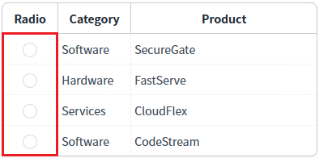
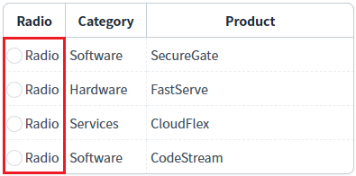
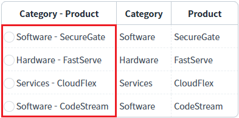
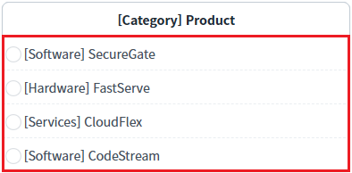
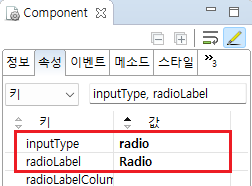
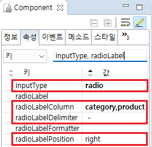
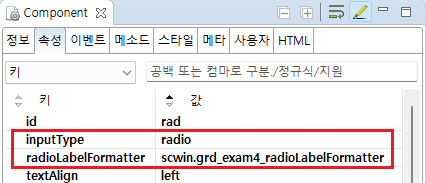

GridView 바디 컬럼의 'inputType' 속성이 'radio'일 때, 'label'을 함께 표시하는 예제입니다. 설정에 통해 고정 문자 또는 GridView의 컬럼 데이터를 조합하여 표시할 수 있습니다. 기본 동작은 'radio'만 표시됩니다.
(기본설정) label 설정 없음
고정된 문자열로 radio의 label 표시하기
GridView의 컬럼의 값을 조합하여 radio의 label 표시하기
사용자 메소드를 통해 radio의 label 표시하기
각 GridView의 첫번째 컬럼에 radio를 설정하였습니다. 표시된 radio의 label을 비교합니다.
예제 영역 '(기본설정) label 설정 없음'에 구성된 GridView에서 테스트합니다.1
실행 결과를 확인합니다.
GridView의 컬럼의 inputType을 radio로 설정한 예시입니다.
첫 번째 컬럼에 radio가 표시됩니다.
Image 1.브라우저(Chrome) 실행 예시

예제 영역 'radio의 label - 고정 문자'에 구성된 GridView에서 테스트합니다.1
실행 결과를 확인합니다.
GridView의 컬럼의 inputType을 radio로 설정하고 고정된 문자열 'Radio'을 label로 표시한 예시입니다.
'Radio' 컬럼에 radio와 label 'Radio'이 함께 표시됩니다.
Image 2.브라우저(Chrome) 실행 예시

예제 영역 'radio의 label 적용 - 컬럼 조합'에 구성된 GridView에서 테스트합니다.1
실행 결과를 확인합니다.
GridView의 컬럼의 inputType을 radio로 설정하고 GridView의 컬럼 'Category'와 'Product'의 데이터를 label로 표시한 예시입니다.
컬럼 'Category - Product'을 확인합니다.
Image 3.브라우저(Chrome) 실행 예시

예제 영역 'radio의 label 적용 - 사용자 메소드 적용'에 구성된 GridView에서 테스트합니다.1
실행 결과를 확인합니다.
GridView의 컬럼의 inputType을 radio로 설정하고 사용자 메소드를 통해 생성된 label을 표시한 예시입니다.
컬럼 '[Category] Product'을 확인합니다.
Image 4.브라우저(Chrome) 실행 예시

1
GridView의 바디 컬럼의 속성을 정의합니다.
[필수] inputType="radio"
[필수] radioLabel="설정 값"
inputType="radio"인 경우 label을 표시하기 위한 속성
예시 ) radioLabel="Radio"
Image 5.웹스퀘어 스튜디오의 Component View - 바디 컬럼 속성 설정 예시

Example 1.Source
<!-- gridView 의 소스 본문 예시 --> <w2:gridView dataList="data:dlt_exam_2"> <!-- 중략 --> <w2:gBody id="gBody1"> <w2:row id="row2"> <w2:column inputType="radio" radioLabel="Radio" id="rad"></w2:column> <!-- 중략 --> </w2:row> </w2:gBody> </w2:gridView>
1
GridView의 바디 컬럼의 속성을 정의합니다.
[필수] inputType="radio"
[필수] radioLabelColumn="컬럼 ID"
inputType="radio"인 컬럼의 경우 다른 컬럼의 정보를 조합하여 해당 컬럼의 label을 생성
예시) radioLabelColumn="categoryLabel,label"
[선택] radioLabelDelimiter="구분자"
컬럼 데이터 간의 구분자
예시) radioLabelDelimiter=" - "
Image 6.웹스퀘어 스튜디오의 Component View - 바디 컬럼 속성 설정 예시

Example 2.Source
<!-- gridView 의 소스 본문 예시 --> <w2:gridView dataList="data:dlt_exam_2"> <!-- 중략 --> <w2:gBody id="gBody1"> <w2:row id="row2"> <w2:column inputType="radio" radioLabelColumn="categoryLabel,label" radioLabelDelimiter=" - " id="rad"> </w2:column> <!-- 중략 --> </w2:row> </w2:gBody> </w2:gridView>
1
STEP 1: GridView의 바디 컬럼의 속성을 정의합니다.
[필수] inputType="radio"
[필수] radioLabelFormatter="메소드명"
inputType="radio"인 경우 radio 버튼의 label로 표시할 값으로의 변환을 수행하는 메소드 이름
예시) radioLabelFormatter="scwin.grd_exam4_radioLabelFormatter"
Image 7.웹스퀘어 스튜디오의 Component View - 바디 컬럼 속성 설정 예시

2
STEP 2: 사용자 메소드를 정의합니다.
'radioLabelFormatter' 속성에 설정한 메소드를 정의합니다.
Example 3.Script
//영역 [radio의 label 적용 - 사용자 메소드 적용]의 radioLabelFormatter scwin.grd_exam4_radioLabelFormatter = function (row, col, label) { //현재 행의 json 데이터 추출 let jsnRow = dlt_exam_4.getRowJSON(row); //데이터 조합 let returnValue = "[" + jsnRow.category + "] " + jsnRow.product; return returnValue; };
radioLabel
radioLabelColumn
radioLabelDelimiter
radioLabelFormatter